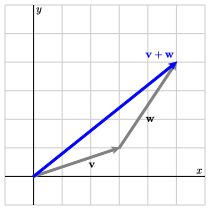

Scalars, vectors, and matrices will play an inportant part in using linear algebra in data science, so it will be good for us to become acquainted with them and how to work with them in Python. This section will focus on scalars and vectors. Section Section 1.4 will focus on matrices.
Subsection1.1.1Three ways to think about vectors
There are three ways we can think about vectors, and each one will play a role in our study of linear algebra.
The data/computer science perspective.
Probably the simplest way to think about a vector is as an ordered list of numbers. This is how we will usually represent vectors in the computer. This is also what allows us to connect linear algebra to data. Suppose we have selling prices of 100 homes, for example. We could put those 100 numbers into an ordered list and call it a vector of home prices. That allows us to think about all 100 home prices together as one unit -- the selling price of (these particular 100) homes. This kind of vector can be called a variable vector since in contains all the information about one variable (in this case price). A richer data set could have many variables, each one stored as a vector.
Alternatively, we may consider a single home and record several different pieces of information about it (selling price, number of bedrooms, size of the lot, etc.). All the information about one home can be stored as a vector. This kind of variable can be called a sample vector or a case vector, since the vector represents one observational unit. A large data set will consist of many case vectors.
When working with data, our list of numbers might be very long. We could have hundreds, or thousands, or millions, or more cases or variables that we are keeping track of. The good news is that vectors behave the same way no matter how long the list of numbers. This means we can learn a lot from smaller examples, which are easier to work with (and visualize).
So let’s consider some smaller examples. \(\vvec = \left[
\begin{array}{r}
2 \\
1 \\
\end{array}
\right]\) and \(\wvec = \left[
\begin{array}{r}
-3 \\
1 \\
0 \\
2 \\
\end{array}
\right]\) are both vectors. The entries in a vector are called its components or entries. Since the vector \(\vvec\) has two components, we say that it is a two-dimensional vector; in the same way, the vector \(\wvec\) is a four-dimensional vector.
Because the numbers we are using are "real" numbers (numbers of any size that can be represented as fractions or decimals), we will denote the set of all \(m\)-dimensional vectors by \(\real^m\text{.}\) Consequently, if \(\uvec\) is a 3-dimensional vector, we say that \(\uvec\) is in \(\real^3\) (written \(\uvec \in
\real^3\)). Note that this will require us to recode non-numeric data using numbers.
The physics/geometry perspective.
This perpective helps us "see" linear algebra. From this perspective, a vector is something that has magnitude (length) and direction. In 2 or 3 dimensions (actually, in 1 dimension as well), vectors can eaily be visualized as arrows. Figure Figure 1.1.1 shows an example in 2 dimensions.
Figure1.1.1.A graphical representation of the vector in 2 dimensions.
If you are familar with this perspecitve -- perhaps from physics where it is used frequently to describe position, velocity, force, etc. -- note that in linear algebra it is almost always the case that all vectors (arrows) will begin at the same position, called the origin.
The geometric and data prespectives are linked using Cartesian coordinates. If you look back at Figure Figure 1.1.1, you can see that we have placed a grid in the background. This makes it easy to see that our vector stretches 2 units in the horizontal (or x) direction and 1 unit in the vertical (y) direction. So Figure Figure 1.1.1 is a representation of the vector \(\vvec = \twovec 21\text{.}\)
Any vector in \(\real^1\text{,}\)\(\real^2\text{,}\) or \(\real^3\) can be represented in a similar way. Vectors in \(\real^1\) live on a line, vectors in \(\real^2\) live on a plane, and vectors in \(\real^3\) live in 3-d "space", which we can represent reasonably well with perspective drawings in the plane. Beyond three diminsions, its more difficult to visualize vectors, but we will use the intuitions we develop in low dimension to help us understand what is happening in higher dimensions.
The mathematical perspective.
The mathematical perspetive is a little bit different again. From this perspective, what is important are the properties that vectors have, and anything sharing these properties (arrows, lists of numbers, or something else entirely) can be considered a vector. Actually, we don’t think about individual vectors so much as a collection of vectors, called a vector space. For each positive integer \(m\text{,}\)\(\real^m\) is an example of a vector space. Indeed, those will be the vector spaces of primary concern in data science. But there are many other vector spaces.
Vector spaces allow for two important operations: scalar multiplication and vector addition, and these operations must satisfy a few basic properties for the vectors to be considered a vector space. "Scalar" is just a fancy word for a number. In scalar multiplication, we multiply a scalar (number) and a vector . The result is a vector (in the same vector space). For vector addition, we add two vectors and obtain another vector (in the same vector space).
Before enumerating the properties these operations must have, let’s define these operations using the data and geometric perspectives.
Subsection1.1.2Vector operations: scalar multiplication and vector addition.
Subsubsection1.1.2.1Scalar Multiplication
Let’s begin with the data perspective. In this perspective a vector is just a list of numbers like \(\vvec = \twovec 21\text{.}\) To multiply \(\vvec \) by the scalar \(s = 3\text{,}\) we simply multiply each component by 3. So \(3 \vvec = 3 \twovec 21 = \twovec{6}{3}\text{.}\) The same thing works for any vector and any scalar -- we simply multiply each component of the vector by the scalar to get a new list of numbers.
Now consider what happens to the arrow representing \(\vvec = \twovec 21\) when we multiply by the scalar \(s=3\text{.}\) Each component of the vector will be three times as large, so the vector will stretch three times as far horizontally and also three times as far vertically. In other words, the vector will be three times as long, but still point in the same direction as \(\vvec\text{.}\) See Figure Figure 1.1.2. This explains the name "scalar" multiplication: This type of multiplication rescales the vector. Note that if the scalar is negative, then the arrow will point in the oposite direction.
Figure1.1.2.Scalar multiplication "scales" a vector by stretching or shrinking it. If the scalar is positive, then the scalar product will point in the same direction as \(\vvec\text{.}\) If the scalar is negative, then the scalar product will point in the opposite direction.
Remark1.1.3.A note on notation.
It is important to be able to distinguish vectors from scalars. You may have noticed that we have been using bold (lower case) letters to represent vectors. This will be our standard notation to help us distinguish vectors from scalars, which we will not put inbold.
You may have seen other notation for vectors, including notation that places a small arrow above variables representing vectors. That notation works poorly in statistical contexts where that space is often used for other things (e.g., \(\hat{\xvec}, \overline{\xvec}, \tilde{\xvec}, \dots\)).
When writing by hand, bold is tricky. We suggest placing a "wiggle" below letters that would be typeset in bold.
Subsubsection1.1.2.2Vector addition
From the data perspective, vector addition works componentwise. That is, we obtain the sum by adding corresponding values in the two vectors. For example
For this operation to make sense, it is important that both vectors have the same number of components (i.e., that they live in the same vector space). In our example, the vectors are in \(\real^3\text{.}\)
To represent the sum \(\vvec + \wvec\) geometrically, we imagine walking from the origin for distance and direction specified by \(\vvec\text{.}\) From there, we continue our walk using the distance and direction prescribed by \(\wvec\text{,}\) after which we arrive at the sum \(\vvec + \wvec\text{.}\) This is illustrated on the left of Figure 1.1.4 where the tail of \(\wvec\) is placed on the tip of \(\vvec\text{.}\)

Figure1.1.4.Vector addition as a simple walk in the plane is illustrated on the left. The vector sum is represented as the diagonal of a parallelogram on the right.
Alternatively, we may construct the parallelogram with \(\vvec\) and \(\wvec\) as two sides. The sum is then the diagonal of the parallelogram, as illustrated on the right of Figure 1.1.4. Just as was the case for the list of numbers approach, it doesn’t matter which vector comes first and which second, we end up in the same place either way. That is \(\vvec + \wvec = \wvec + \vvec\) for any vectors \(\vvec\) and \(\wvec\) that live in the same vector space. If you like fancy words, you can say that vector addition is commutative.
Preview Activity1.1.1.Scalar Multiplication and Vector Addition.
What geometric effect does scalar multiplication have on a vector? Also, describe the effect that multiplying by a negative scalar has.
Sketch the vectors \(\vvec, \wvec, \vvec + \wvec\) using Figure 1.1.6.
Figure1.1.6.Sketch the vectors on this grid.
Consider vectors that have the form \(\vvec +
c\wvec\) where \(a\) is any scalar. Sketch a few of these vectors when, say, \(c = -2, -1, 0, 1, \) and \(2\text{.}\) Give a geometric description of this set of vectors.
Figure1.1.7.Sketch the vectors on this grid.
If \(c\) and \(d\) are two scalars, then the vector
\begin{equation*}
c \vvec + d \wvec
\end{equation*}
is called a linear combination of the vectors \(\vvec\) and \(\wvec\text{.}\) Find the vector that is the linear combination when \(c = -2\) and \(d = 1\text{.}\)
Can the vector \(\left[\begin{array}{r} -31 \\ 37
\end{array}\right]\) be represented as a linear combination of \(\vvec\) and \(\wvec\text{?}\) Asked differently, can we find scalars \(c\) and \(d\) such that \(c\vvec+d\wvec = \twovec{-31}{37}\text{.}\)
Solutions to this preview activity are given in the text below.
If you worked through the activty above, you should have discovered that the set of vectors having the form \(c\vvec\) is a line through the origin. To form the set of vectors \(c\vvec+\wvec\text{,}\) we can begin with the vector \(\wvec\) and add multiples of \(\vvec\text{.}\) Geometrically, this means that we begin from the tip of \(\wvec\) and move in a direction parallel to \(\vvec\text{.}\) The effect is to translate the line \(c\vvec\) by the vector \(\wvec\text{,}\) as shown in Figure 1.1.8.
Figure1.1.8.The set of vectors \(c\vvec + \wvec\) form a line.
At times, it will be useful for us to think of vectors and points interchangeably. That is, we may wish to think of the vector \(\left[\begin{array}{r} 2 \\ 1 \end{array}\right]\) as describing the point \((2,1)\) and vice-versa. When we say that the vectors having the form \(c\vvec + \wvec\) form a line, we really mean that the tips of the vectors all lie on the line passing through \(\wvec\) and parallel to \(\vvec\text{.}\) When thinking about many (possibly infinitely many) vectors, it is often easier to visualize them as points rather than as arrows.
Subsubsection1.1.2.3Mathematical properties of vector operations
Observation1.1.9.
Even though these vector operations are new, it is straightforward to check that the following 8 properties hold for all vectors \(\uvec, \vvec, \wvec \in \real^m\) and all scalars \(a, b \in \real\text{.}\)
There is a vector (denoted \(\zerovec\)) such that \(\zerovec + \vvec = \vvec\) .
Vector Inverse.
For every vector \(\vvec\text{,}\) there is an inverse vector \(-\vvec\) such that \(\vvec + -\vvec = \zerovec\text{.}\)
Compatability of scalar operations.
\(a(b\vvec) = (ab) \vvec\text{.}\)
Scalar Identity.
\(1 \vvec = \vvec\text{.}\)
These are exactly the properties that define a vector space mathematically. For scalars we can use any field (think: a number system where addition, subtraction, mulitiplication, and division are defined and have the properites you are familiar with from the real numbers). The vectors can be anything as long as the operations satisfy the eight properties listed above.
Subsection1.1.3The (Euclidean) length of a vector
The length, also called the magnitude or norm, of a vector is denoted \(\len{\xvec}\text{.}\) We can compute the length of a vector using using the Pythagorean Theorem. For example, for a vector \(\xvec = \twovec{x_1}{x_2} \in \real^2\text{,}\) we have
We have emphasized that this is the Euclidean length. That is likely the length you are most familiar with since it corresponds to our usual notions of geometry. But there are other norms or lengths that have important applications as well.
Subsection1.1.4Summary
We can think of vectors in three different ways: (1) as a list of numbers (the data perspective); (2) as magnitude and direction, i.e., arrows (the geomtric perspective), or (3) as a set of objects with certain properties (the mathematical perspective). The ability to move betwen these three ways of thinking is one of the keys to understanding linear algebra.
We are primarily interested in \(\real^m\text{,}\) the space of vectors consisting of \(m\) real numbers in the data perspective. But there are many other vector spaces.
There are two operations we can perform with vectors: scalar multiplication and vector addition. Both of these operations are easily computed from a list of numbers but also have geometric meaning.
The Euclidean length (or norm) of a vector can be computed using the Pythagorean. The square of length is the sum of the squares of the vector’s components.